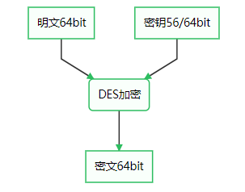
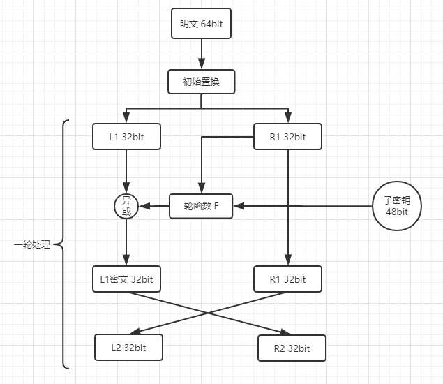
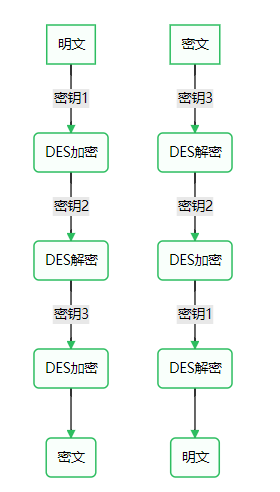
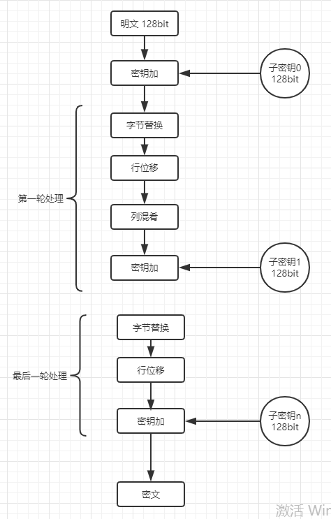

本文讨论的对称加密算法主要包括 DES、3DES、AES
DES
明文：64 bit
密文：64 bit
密钥：56/64 bit（每 7 位插入一个校验位的时候为 64 bit）
其设计思想充分体现了香农提出的混淆和扩散原则

DES 使用的是 Feistel 结构来加密的，一共需要 16 轮，加密过程如下：
- 将明文进行初始置换（通过置换表）
- 将置换后的数据分为左右 L1 R1 各 32 bit
- 将 48 bit 的子密钥与 R1 作为轮函数F的输入
- 将 L1 与轮函数的输出异或运算，得到 L1密文
- 将 L1 密文与 R1 交换位置，分别作为下一轮的 R2，L2
- 将 2-5 再重复 15 次
- 将 L17 R17 交换位置，并拼接为 64bit 数据
- 将 64bit 数据进行逆初始置换，得到最终密文
需要注意的是：
- 子密钥在每一轮中都是不一样的
- 每一轮之间会将左侧和右侧对调（右侧没有加密）
- 解密的过程就是将输出用相同的子密钥再走一遍，如果加密的子密钥顺序是key1 key2 key3，则解密的子密钥为key3 key2 key1
- 轮函数可以设计为不可逆函数如hash，对解密没有影响

golang 代码实战：
1 | func TestDesEncrypt(t *testing.T) { |
三重DES
明文：64 bit
密文：64 bit
密钥：56/64 * 3 bit（加入校验位的时候为64 bit）
为了增加 DES 的强度，明文经过 3 次 DES 处理后变成最后的密文，因此密钥长度为 56/64 * 3 bit。3 次 DES 处理并不是简单的 3 次加密的过程，而是加密、解密、加密，解密的过程相应的就是解密、解密、解密。这样设计是因为在 3 个密钥相同时，可以兼容 DES 算法

golang 代码实战：
1 | func TestTripleDesEncrypt(t *testing.T) { |
AES
明文：128 bit
密文：128 bit
密钥：128/192/256 bit （分别需要10/12/14轮）
AES 标准最后评选出的算法是 Rijindale 算法，该算法支持密钥 128/192/256 bit ，分别需要 10/12/14 轮，本文讨论的是 128 bit密钥。它的加密过程并没有使用 DES 的 feistel 结构，而是使用了一种新的 SPN 结构，需要 10-14 轮计算，如下图：

其中每一轮计算过程如下：
- SubBytes（字节替换）：以字节大小为索引，与s_box表中字节映射
- ShiftRows（行移位-扩散）：从上到下从左到右的顺序组成 4 * 4 数组，从 0 行开始，第 n 行向左平移 n 个字节
- MixColums（列混肴-扩散）：对每一列进行矩阵运算，共四列
- AddRoundKey（轮密钥加）：与轮密钥即子密钥异或运算
需要注意的是：
- 最后一轮没有列混淆
- 加密时：SubBytes -> ShiftRows -> MixColums -> AddRoundKey
- 解密时：AddRoundkey -> InvMixColums -> InvShiftRows -> InvSubBytes (Inv代表逆运算)
golang 代码实战：
1 | func TestAesEncrypt(t *testing.T){ |
迭代模式
以上讨论的三种加密算法都是分组密码，每次只能处理特定长度的一块数据，例如 DES 和 3DES 能处理的这块数据长度为 8 bytes，AES 的为 16 bytes。而我们的日常需要加密的明文基本上都是大于这个长度，这就需要我们将明文的内容进行分组并迭代加密，这个迭代加密的方式就是模式。
ECB 模式
电子密码本模式（electronic codebook ），最简单的模式，将明文分组直接作为加密算法的输入，加密算法的输出直接作为密文分组。
CBC 模式
密文分组链接模式（Cipher Block Chaining），密文之间是链状的，明文分组跟上个密文分组异或之后作为加密算法的输入，加密算法的输出作为密文分组。第一个明文分组加密时需要一个初始化向量。
CFB 模式
密文反馈模式（Cipher FeedBack）,上一个密文分组作为下一个加密算法的输入，加密算法的输出与明文分组异或结果作为密文分组。同样需要一个初始化向量
OFB 模式
输出反馈模式（OutPut FeedBack）,上一个加密算法的输出作为下一个加密算法的输入，明文与加密算法的输出异或作为密文分组。需要初始化向量
CTR 模式
计数器模式（Counter），将计数器作为加密算法的输入，加密算法的输出与明文分组异或作为密文分组，计数器是累加的。需要一个初始的计数器值
以上各种模式，ECB 不推荐使用
golang 代码实战：
1 | func TestCBCMode(t *testing.T) { |